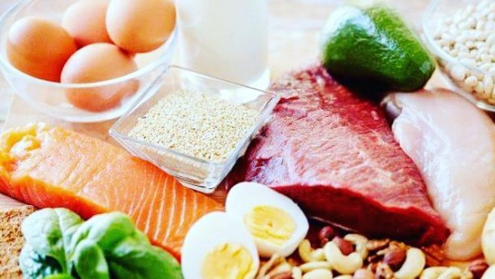

Диета дает достаточно быстрые результаты, уже через неделю вы сможете сбросить до 5 кг и больше. В первые две недели произойдет некоторая перестройка в вашем организме. Обмен веществ (метаболизм) пойдет слегка по-другому. Организм начнет использовать свои внутренние ресурсы. Легких углеводов вы его лишите, придется ему использовать накопленный жир. Вы копили этот жир «на черный день»? Считайте, что этот день наступил! Когда процесс метаболизма перестроится, основной жир уйдет. Дальше процесс пойдет не так стремительно, но вес все равно будет снижаться, постепенно, плавно. Наберитесь терпения. Самое главное – принять твердое решение похудеть. Размышления типа: «Попробую эту диету, а потом другую, а потом третью», не пройдут. Если вы выбрали низкоуглеводную диету (конечно, у вас при этом не должно быть противопоказаний по состоянию здоровья), следуйте ей, достигните каких-то результатов, а потом будете думать, продолжать худеть или нет. Но бросать после нескольких дней не стоит.
Очень важно, особенно в первые дни, отказаться от сладкого. Сахар нельзя вообще. Ни кусочка сахара! В первое время рекомендую отказаться также от меда, пирожных, мороженого, варенья, джемов, картофеля, орехов. Чем строже вы с самого начала отнесетесь к себе, тем легче потом будет добавлять продукты, расширять рацион.
Поострожней с алкоголем. Сладкие вина, ликеры и пиво совсем не безопасны в плане содержания углеводов. Крепкие напитки (водка, виски, коньяк и т.п.) разрешены (0 условных единиц), но здесь кроются подводные камни. Дело в том, что даже небольшие дозы алкоголя, ох, как разжигают аппетит, способствуя выработке желудочного сока. К тому же ослабляется самоконтроль. Того и гляди можно потерять счет очкам, увлечься и превысить допустимые 40 условных единиц.
Мясо и птица – короли диеты Кремля! Лучше отдавать предпочтение именно мясу в чистом виде, а не сосискам, сарделькам и колбасам. Если вы уверены, что эти мясопродукты натуральные – пожалуйста. Но в нашей колбасе чего только нет: и бумага, и соя. К сожалению, в вареной колбасе и сосисках достаточно часто большой процент составляет не мясо, а соя. А это дополнительные углеводы, очки.
Мясо можно есть в неограниченном количестве. Но не забывайте, что ноль очков содержится лишь в чистом продукте, а приготовив мясо или птицу с соусом или в сухарях, вы рискуете переборщить с очками.
Конечно, не забывайте и про рыбу. Рекомендую отварную или на пару. Можно с небольшим количеством овощей. Могу посоветовать чаще готовить рыбу тем, кто не любит долго стоять у плиты. Многие боятся готовить рыбу, особенно целиком, хотя на самом деле это очень легко. Покупайте только филе рыбы в супермаркетах или рыбных магазинах, вам не придется ее разделывать (для меня это самое сложное). Важно, конечно, чтобы рыба была свежей. У свежей рыбы должны быть ясные глаза, под жабрами – кровь, и нормальный цвет тушки. При покупке филе необходимо проверить плотность ткани – при слабом нажатии она должна быть плотной на ощупь. Перед приготовлением натрите тушку оливковым маслом, солью и травами, а потом зажарьте на растительном масле (оно разрешено на 100 % в диете Кремля). Я предпочитаю жарить рыбу или готовить на гриле. Эти способы не только отличаются простотой, но и улучшают вкус рыбы, так как сохраняют ее аромат. Жарить рыбу намного легче и быстрее, чем мясо – она будет готова через 20 минут, в то время как на приготовление мяса может уйти час или больше. Очень легко и быстро готовятся моллюски, особенно мидии. После того, как вы их очистите, потушите их немного с чесноком и перцем чили, добавив белого вина (0 условных единиц), – несколько минут и готово прекрасное блюдо. Я люблю простые, классические приправы – розмарин, тимьян и лавровый лист. Старайтесь использовать свежие травы – они лучше усиливают вкус рыбы.
Любителям мяса, которые едят рыбу не слишком часто, могу посоветовать попробовать «мясные» сорта рыбы, например, рыбу-меч или тунец. У них более плотная текстура, поэтому их можно готовить как стейк. Но помните, что готовится рыба быстрее, чем мясо, а потому подавать стейки из нее надо немного непрожаренными, иначе они будут слишком жесткими и сухими.
О пользе рыбы нет смысла рассуждать долго. Приведу сжатые факты. Не говоря об огромном количестве протеина, белая рыба – прекрасный источник селена, снижающего риск сердечных заболеваний и рака. Исследования показали, что люди, потребляющие богатую селеном пищу, реже болеют раком. В морской рыбе содержится йод, необходимый для поддержания функции щитовидной железы, отвечающей за обмен веществ в организме. Рыба богата витамином А, который очень полезен для глаз, кожи и для укрепления иммунитета. У сардин и консервированного лосося мягкие съедобные косточки, являющиеся великолепным источником кальция – минерала, необходимого для здоровых костей и зубов. Кальций особенно необходим женщинам для предотвращения развития остеопороза. Жирная рыба, такая как скумбрия, лосось или форель, – прекрасный источник жирных кислот, снижающих риск сердечных заболеваний. Моллюски, особенно устрицы, – один из главнейших источников цинка, микроэлемента, необходимого для поддержания работы иммунной системы. Жирные кислоты, содержащиеся в рыбе, снимают воспаление при артрите, псориазе и экземе. Жиры, содержащиеся в жирной рыбе, облегчают боль при болезненных менструациях. Связано это с тем, что они способствуют выработке обезболивающих веществ. Обязательно включите рыбу в свой рацион!
Для приготовления грибных блюд лучше всего подойдут шампиньоны – в них, по сравнению с другими грибами, меньше углеводов, а значит, и условных единиц. Да и приобрести шампиньоны проще, чем другие грибы. Ведь далеко не каждый из нас, городских жителей, имеет возможность отправиться за грибами в «экологически чистый» лес, и мало кто решится собирать их в ближайшем парке, т.к. грибы накапливают в себе тяжелые металлы и другие вредные для здоровья вещества, которых в черте города предостаточно. Поэтому проще и безопаснее купить их в магазине. Из свежих грибов у нас продаются в основном шампиньоны, и это приверженцев диеты Кремля вполне устраивает. Можно купить маринованные или соленые грибы. Но не советую вам покупать их у бабушек на улице, так как они могли быть собраны все в том же ближайшем парке.
Грибы особенно богаты белками и аминокислотами, что ставит их на один уровень с мясом и рыбой. Съедобные грибы – ценный пищевой продукт, но белки, содержащиеся в грибах, относятся к труднорастворимым веществам и усваиваются хуже, чем животные белки. Содержащиеся в грибах свободные аминокислоты, а также экстрактивные ароматические вещества являются стимуляторами желудочной секреции. Они возбуждают аппетит, способствуют лучшему перевариванию и усвоению пищи. Грибы также содержат углеводы, жиры, витамины (А, В, С, РР), минеральные вещества, включая микроэлементы. В грибах много калия, фосфора, натрия, кальция, железа.
Следует использовать свежие, молодые, не поврежденные грибы. Перед приготовлением они должны быть тщательно проверены, очищены и промыты. Грибы для холодных и горячих блюд должны подвергаться тепловой обработке (кипячению) не менее 30 минут.
Орехи содержат немало углеводов, но в них полно полезных веществ. Пригоршня орехов вам не повредит, чего нельзя сказать о сладостях, в которых кроме сахара ничего нет. Орехи – прекрасный источник протеина, пищевых волокон, полезных витаминов и минералов. Кроме того, они содержат вещества, которые помогают при ряде заболеваний. Они доказано снижают риск сердечных заболеваний. Орехи снижают уровень холестерина, вернее ЛНП – «плохого» холестерина, который откладывается на стенках сосудов холестериновыми бляшками. Орехи полезны и не очень опасны в диетическом плане, если четко считать условные единицы. Так что если надумаете включить орехи в свой рацион, почитайте про самые популярные из них.
Грецкие орехи – это единственные орехи, в которых содержатся полезные жирные кислоты. Они предотвращают развитие воспалительного процесса, облегчая, таким образом, состояние больных при псориазе, артрите и экземе. Кроме того, в грецких орехах содержится природный антиоксидант, предотвращающий появление раковых клеток. Добавляйте грецкие орехи к салатам – это придаст блюдам пикантности и улучшит вкус.
Арахис содержит вещества, снижающие риск сердечных приступов и инсульта, и помогающие бороться с раковыми клетками. Кроме того, в арахисе очень много фолиевой кислоты, которая необходима женщинам в первый триместр беременности. Старайтесь есть несоленые орехи и орехи в скорлупе – вам потребуется больше времени, чтобы съесть их, так что вы вряд ли превысите норму условных единиц.
Миндаль богат витамином Е, предотвращающим сердечные заболевания и некоторые виды рака, и кальцием, необходимым для зубов и костей. Съедая по 25 миндальных орехов в день, вы получите 1/5 суточной нормы кальция. Ешьте нелущеные орехи – в них больше питательных веществ.
Фисташки, конечно, лучше есть без пива, иначе уровень углеводов может зашкалить. Исследования показывают, что употребление в пищу продуктов, богатых бета-каротином, какими являются фисташки, снижает риск развития катаракты. Для аромата и вкуса добавьте измельченные фисташки к фруктам или мюсли.
Орехи кешью богаты цинком, необходимым для нормального функционирования иммунной системы, и железом, дефицит которого ведет к анемии. Я всегда держу на работе пакетик с кешью. Эти орехи надолго заряжают энергией, что избавляет от искушения зарядиться плиточкой шоколада.
Рацион почти не меняется, ведь можно практически все, кроме сладостей. Однако многим, возможно, нелегко будет отказаться от привычных утренних соков. Я, например, с трудом смогла заставить себя не пить утром сок двух выжатых апельсинов. Но в первое время лучше потерпеть. Можно перейти на морковный или томатный сок или на молоко. Но лучше всего (я сделала именно так) пить по утрам чистую воду с несколькими капельками лимонного сока. Это и для пищеварения полезно. Утренние чай и кофе, разумеется, должны быть без сахара. Я предпочитаю зеленый чай, его не надо подслащать, он и так очень вкусный. В жаркую погоду соблазнительна мысль о бокале прохладного пива. Но в нем немало углеводов. Отлично утоляет жажду сухое вино, разбавленное водой. Это надежный источник необходимых минеральных солей. А перед сном можно выпить бокал сухого вина или стакан молока.
Не стоит полностью отказываться от овощей и фруктов. В них и дополнительные витамины, и растительные волокна (клетчатка). Клетчатка необходима для нормальной работы желудочно-кишечного тракта. Она стимулирует перистальтику кишечника, способствуя продвижению пищи по ЖКТ. Полностью отказавшись от растительной пищи, вы сразу столкнетесь с проблемой запоров и повысите нагрузку на почки. При большом количестве белка в организме образуется много кетоновых тел, это может привести к нарушению работы почек и других органов. Поэтому есть исключительно мясо я настоятельно не рекомендую! Старайтесь выстраивать свой рацион так, чтобы пища была разнообразной. Только в этом случае вы сможете похудеть быстро и без ущерба для здоровья.
И вообще, во всем надо знать меру. Нельзя объедаться даже теми продуктами, которые разрешены безоговорочно. Одно из правил диеты Кремля – ешьте только тогда, когда вам захочется, и столько, сколько нужно, чтобы почувствовать сытость. Здесь есть маленькая хитрость – уловка природы. Дело в том, что сигнал о насыщении пищей поступает в мозг с 20-минутным опозданием. То есть насыщение произошло, а вы еще продолжаете есть. И лишь через 20 минут понимаете, что уже не голодны. Но за эти 20 минут вы можете успеть немало съесть. И еще через 20 минут почувствуете, что объелись. Так что трапезничайте не торопясь, как говорится, с чувством, с толком, с расстановкой. Это пойдет на пользу в любом случае, ведь хорошо пережеванная пища лучше усваивается, этому же способствует и еда в спокойной обстановке, без дерганья. Никогда не читайте и не смотрите телевизор, когда едите. Рискуете увлечься – это раз, и организм не может полностью отдаться перевариванию пищи – это два. Также старайтесь избегать неприятных или вообще ответственных разговоров во время приема пищи. Когда я ем, я глух и нем.